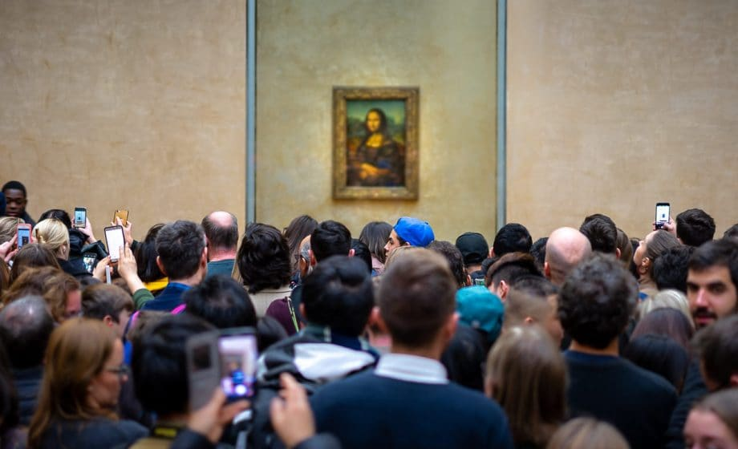

Todos os dias, dezenas de milhares de pessoas fazem fila para ver a famosa pintura Mona Lisa, de Leonardo da Vinci. Nos cinco séculos desde que a obra-prima foi criada, a Mona Lisa ganhou vida própria. Pessoas vêm de todo o mundo para vê-la — todas com muitas motivações e ideias diferentes sobre o que a Mona Lisa significa para elas.Every day, tens of thousands of people wait in line to see Leonardo da Vinci's famous painting Mona Lisa. In the five centuries since the masterpiece was created, the Mona Lisa has taken on a life of its own. People come from all over the world to see it—all with many different motivations and ideas of what the Mona Lisa means to them.
Muito semelhante à Mona Lisa, os primeiros capítulos de Gênesis — as histórias de Adão e Eva e do jardim do Éden — adquiriram vida própria. Embora todos tenhamos perguntas importantes quando chegamos ao texto bíblico, nossa prioridade é focar intencionalmente nas perguntas com as quais os autores bíblicos estavam preocupados. Demonstramos amor pelo nosso antigo vizinho israelita quando paramos, reconhecemos nossas perguntas e as deixamos de lado para que possamos realmente ouvir o que os autores bíblicos estão tentando dizer.Much like the Mona Lisa, the early chapters of Genesis—the stories of Adam and Eve and the garden of Eden—have taken on a life of their own. While we all have important questions when we come to the biblical text, our priority is to intentionally focus on the questions the biblical authors were concerned about. We demonstrate love for our ancient Israelite neighbor by taking time to pause, recognize our questions, and set them to the side so we can really listen to what the biblical authors are trying to say.

Tim usa o exemplo de pessoas tendo todo tipo de perguntas diferentes quando visitam a Mona Lisa. O que significa "sair da fila da Mona Lisa" quando falamos de estudar a Bíblia?Tim uses the example of people having all sorts of different questions when they visit the Mona Lisa. What does it mean to "step out of the Mona Lisa line" when talking about studying the Bible?
Flickr Commons (2018). Art Critique.